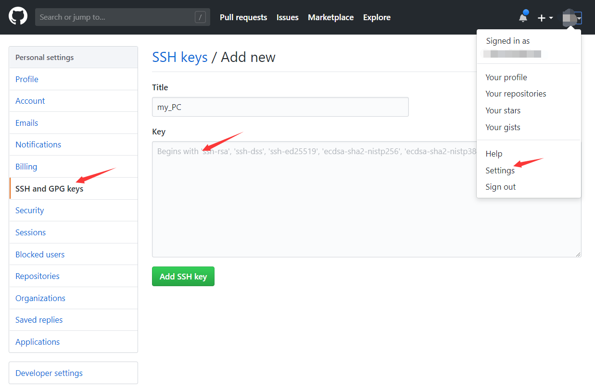

Git 简易教程
基本介绍
Git 是目前世界上最先进的分布式版本控制系统，我们将用它来管理 PA 课设的版本更迭。
常见概念
工作区：在你的计算机上能看到的目录。
版本库：又名仓库，是新建版本库时在工作区下生成的一个隐藏目录.git（通过 ls -a 命令可以看到）。
暂存区：在 Git的版本库中，需要提交的文件修改通通放到暂存区，然后一次性提交暂存区的所有修改 。

常用指令
安装
gitsudo apt-get install git配置
gitgit config --global user.name "Your Name" git config --global user.email "email@example.com"创建版本库
git init #在当前路径下创建仓库添加文件到当前仓库
git add readme.txt git commit -m "write a readme file" #描述此次改动的说明信息查看提交历史
git log #每次改动之前提交的说明信息版本回退
git reflog #先用 git log/reflog 查看commitID git reset --hard commitID git reset --hard HEAD^ #回退到上一个版本删除版本库中的文件
git rm readme.txt还原误删的工作区的文件
git checkout --readme.txtgit checkout其实是用版本库里的版本替换工作区的版本克隆远程库到本地
git clone https://github.com/your_github_name/your_hub.git #https速度较慢 git clone git@github.com:your_github_name/your_hub.git#克隆在当前目录下本地仓库关联远程库
创建
SSH Key的秘钥对ssh-keygen -t rsa -C "your_email@example.com" #一开始配置的git的邮箱输完这条命令之后一路回车不需要设置各种密码，然后在
/root目录下进入.ssh文件 ，id_rsa为私钥（不能泄露），id_ras.pub为公钥。到自己的 github 的Settings下的SSH and GPG keys下添加自己的公钥即可。
本地仓库关联
git remote add origin git@github.com:your_github_name/your_hub.git git push -u origin master #第一次推送master分支的所有内容 git push origin master #推送最新修改如果这是一个非空仓库，需要
git pull origin master，将远程的代码拉到本地。
创建与合并分支
查看所有分支
git branch在
master分支下创建pa1分支，然后切换到pa1分支git checkout -b pa1以上命令相当于以下两条命令：
git branch pa1 #创建分支pa1 git checkout pa1 #切换到分支pa1执行之后，目前在
pa1分支上，可以用git branch命令查看。在
pa1分支下开发git add file git commit -m '..."跟
master下开发更迭并无两样。当前版本开发完成之后，切回到master分支：git checkout master合并删除
pa1分支git merge pa1 git branch -d pa1对于不需要合并的分支可以通过
git branch -D pa1删除。
解决冲突
当分支
pa1与master都有新的提交时，执行git merge pa1之后只能手动修改文件（尽管有提示不同分支的代码区别，但是依旧很麻烦），最好的做法就是避免这种情况的发生。对于 PA 项目管理，我们给出的建议是当新建分支之后，master 分支上就不要再做提交，直到子分支合并到 master 之后再提交到远程仓库。推送到远程仓库
git remote -v #查看远程信息库 git remote remove origin #删除origin远程库 git push origin master #将master上版本推送到origin上
补充说明
Git 的更多应用如多人协作开发版本更迭、当前正在子分支上开发但是突然发现主分支上有 Bug 等等由于不牵扯到 PA 项目的管理所以在此不做介绍，具体可以自行在网上搜索。